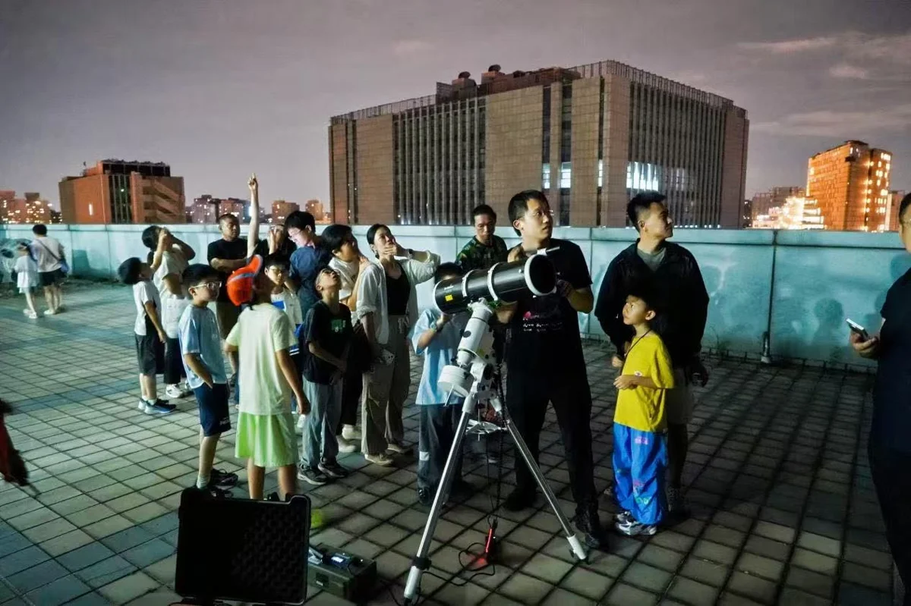

01西城 · 西四 · 建议3—4小时
中国地质博物馆 · 玩转地博
10/1—10/7
矿物、化石和动手放在同一站，最贴合喜欢挖矿、地质的孩子；市区半日也容易安排。
不只隔着展柜看石头。国庆系列活动包括我在地博修化石、手作水晶树、寻找生辰石、火山实验和大陆移动等，把收藏兴趣接到地球科学。上述是系列项目，并非每天全部开放。
- 时间
- 活动14:00—16:00；馆9:00—18:00，17:30停止入馆
- 费用边界
- 普通成人馆票15元；未成年人、60岁以上老人等优惠人群0元，仍需预约。活动收费和材料费未核。
- 预约路径
- 中国地质博物馆公众号或支付宝小程序，可提前7日内预约馆票；课程时段见页首课表，具体主题、费用、年龄、报名和名额请另向馆方确认（010-66557858）。
- 带老人
- 较适合短半日；官网列有无障碍坡道及免费轮椅。孩子上活动时老人可按体力择厅休息。
- 建议玩法
- 建议13:00到馆看矿物宝石（1h）→已约到的科普教室活动（2h）→休息或选看化石（0.5h）。
临出发前：馆票不等于活动名额；未核10/4—7每一天具体项目。若约不到活动，就按常设展半日游，不承诺现场修化石。
证据状态：官方活动汇总＋馆方开放和票务规则；余位未核
02朝阳 · 奥林匹克公园片区 · 建议4—5小时
中国科技馆 · 欢乐过国庆，好奇探未来
国庆假期主题活动
科学体育、解谜、机械搭建都比单纯看展更有参与感；华夏科技学堂明确面向8—12岁亲子家庭。
可以在科学体育空间挑战创意自行车与跑酷，在未来海洋主题迷宫中解谜。华夏科技学堂围绕古代军事技术，安排诸葛连弩、巢车、戈矛与夯土等动手内容，具体选项看当天排期。
- 时间
- 各项目时刻以馆方预约页为准
- 费用边界
- 脑科学年度展《沟壑的交响》免费、需预约；主展厅、影院、体验营及学堂费用分别核实，不能统称免费。
- 预约路径
- 先查中国科技馆官方预约渠道，优先锁定8—12岁华夏科技学堂，再配主展厅或短期展；名额有限、约满为止。
- 带老人
- 室内备选；展馆体量大，选一个主题区＋休息，不陪孩子刷完全馆。
- 建议玩法
- 已预约动手课（按场次）→科学体育或海洋解谜（1h）→午餐休息（1h）→脑科学展或影院二选一（1h）。总时长为建议。
临出发前：报道确认假期项目，但没有逐日课表及实时余位；免费脑科学展需要单独预约。
证据状态：10/1中国科技馆供稿；课程、票价及余位待预约页复核
03西城 · 西直门外 · 白天建议3h；夜宿另算一晚
北京天文馆 · 星河趣玩集＋条件式夜宿
白天10/1—7；夜宿10/1—6
白天手作容易和看展组合；想深入陨石与观测，可再核夜宿，但不把未知名额当确定行程。
巧手坊、学识铺、欢乐档分别对应手作、分龄天文答题和益智游戏。官方排期海报显示10/4月球车拼装、10/5陨石拓印、10/6星空立体画。夜宿招募6—12岁亲子家庭，陨石大侦探包含探测器搜寻、显微镜与试剂鉴定。
- 时间
- 市集9:30—11:30、13:30—16:30；夜宿18:00—次日8:00
- 费用边界
- 市集互动免费；未满18岁展厅免费但需预约。成人展厅、剧场和特殊活动按各自票务规则；夜宿费用未核。
- 预约路径
- 北京天文馆公众号→参观指南→天文馆购票；普通展厅/剧场可购含当日在内3日内票。手作每日限量、先到先得；夜宿另外预约。
- 带老人
- 白天短时参观较适合；不推荐把老人默认纳入夜宿，登观测台和睡眠条件需单独确认。
- 建议玩法
- 白天：展厅（1h）→手作/答题（1h）→休息（0.5h）→选看一处展项（0.5h）；不要同日再刷古动物馆全馆。

夜宿观测活动配图｜新京报9/30报道，受访者供图；不代表当晚天气临出发前：陨石夜宿10/4—6具体哪晚、几大几小、费用与余位都未确认；户外天文观测取决于天气，不能保证看见土星或月面。
证据状态：馆方原始公告＋官方排期海报；特殊活动购票条件待核
04朝阳 · 奥林匹克公园片区 · 建议2—3小时，非官方活动时长
中国工艺美术馆 中国非物质文化遗产馆 · 乡村工匠手工体验
馆10/1—7开放；乡村工匠活动2026/9/29—10/6，剩余可参加日期10/4—6；不可延伸至10/7。
三项中今天最值得先查票的动手选项：馆方明确可亲手刺绣剪纸、做互动任务，10岁孩子可选择兴趣工坊；老人可看工艺展示，不必全程站着。不是科技课程，但手工参与证据最明确。
“匠美乡村 丝路繁花”乡村工匠国际交流推介活动设置天工造物、锦绣经纬、文房雅作、巧手编织、方寸生花、匠集大成六大工坊。只承诺官方列明的手工体验方向，不承诺每个工坊每天都能随到随做。
- 时间
- 馆9:00—17:00，16:00停止入馆。工坊活动官方未公布逐日开工、停工时刻，不把馆开放时间等同于工坊全时营业。
- 费用边界
- 常设展馆票0元；工坊体验、材料费未公布，现场逐项确认。可选《可以观》演艺另为60元/人，不包含在免费馆票中。
- 预约路径
- 先约馆票，再问馆内工坊今天项目、年龄、余位和费用。假期公告允许70周岁以上老人等凭证到东南门票务中心由工作人员协助入馆；这不替代孩子、普通成人预约，也不保证工坊名额。
- 带老人
- 官网明确可向咨询台联系轮椅；建议选1—2个工坊，老人以看工艺展示和休息为主。
- 建议玩法
- 10/4先查下午馆票，成功后再出发；馆内选剪纸/刺绣等工坊。若无体验余位就转馆内展览；10/7只能按室内展览备选，不能宣传乡村工匠活动仍在。
临出发前：实时馆票和各工坊名额未查询。 单项动手适龄、开课时刻、材料费、是否另需预约均未公布，需咨询现场；不能保证10岁孩子所有工坊都可做。 馆方可选《可以观》演艺公告写10/3—5共四场、60元/人、6岁及以上；文本只给10:15—10:30或14:15—14:30入场窗口，没有逐日场次表，未将其作为今日确定场次。成功订演艺可免另约馆票。
证据状态：已核2026节日室内活动；10/7仅常设展室内备选；馆方原文已读，余票未核
05东城 · 天桥 · 研学2小时；小剧场30分钟；纯看展建议2—3小时
国家自然博物馆 · 动物科普小剧场与生存竞技场
馆10/4—7按法定节假日例外开放；生存竞技场明确2026/10/4、5、6、7；动物大阅兵在本窗口仅10/4。
最贴合10岁孩子的自然科学：生存竞技场面向7—12岁，以进化卡牌、展厅探案、任务本集章理解自然选择。今天上午研学已过，不再建议临时赶9:30；下午可看动物小剧场，5—7日再抢研学。
免费小剧场“动物大阅兵”认识曾与人类并肩的动物；收费生存竞技场先玩卡牌模拟环境和变异，再在生命起源等6个展厅探案。无法参加活动时，选动物、昆虫、植物、水生生物常设展，不与已排除的古动物馆混为一馆。
- 时间
- 馆9:00—17:00，16:30后停止入馆；生存竞技场每天9:30—11:30。10/4动物大阅兵10:30、13:30，每场30分钟；今日可争取13:30场，13:00咨询台开始发卡。
- 费用边界
- 常设展馆票0元；动物大阅兵0元；生存竞技场268元/儿童（含一大一小入馆预约）。收费特展、4D影院、其他付费导览不包含，未核票价。
- 预约路径
- 研学：公众号→门票预约→教育活动→科普活动，付款后凭预约二维码和身份证入馆，9:30前到3F探索角实验室。小剧场：已有10/4馆票者在13:00去咨询台领13:30预约卡；不能靠领活动卡绕过馆票。
- 带老人
- 馆方参观服务提供免费轮椅租借。研学会跨6个展厅走动，只允许一位成人陪同孩子，不建议老人陪全程；老人另约馆票后看少量常设展，或与其他成人休息。
- 建议玩法
- 10/4上午9:30研学已结束，不作为今天临时可报名选项。若能取得或已有11:00—14:00入馆票，尽量13:00前入馆领卡，13:30参加免费小剧场；无票不要直接去现场排队。也可查5—7日9:30研学余位。
临出发前：未进入实名购票系统，无法确认今日馆票或5—7日研学余位；馆方文案“开售即空、暑期加场”不是实时余位信息，采用正文明确的2026年10/4—7日期。 今日免费小剧场每场仅30人，不能保证领到卡；10/5—7没有动物大阅兵排期，不延伸宣传。 常规讲解公告每日10:00、13:30，临时调整以馆内广播为准；不将讲解等同动手课。
证据状态：已核2026节日科普活动；无活动名额时为常设展室内备选；馆方原文已读，余票未核
06西城 · 西直门外 · 建议2—3小时
中国古动物馆 · 从鱼到人与亲子研学
演化主题10/1—7；亲子研学10/1—5（暂定）
对化石和远古生命感兴趣的家庭内容扎实；但研学日期仍标暂定，所以不排在预约条件更明确的方案前。
用脊椎动物从鱼到人的演化线看化石，不只是认恐龙名字。系列亲子研学公告依次列出遇见神州古人、禄丰寻龙记、热河游乐场、重返海洋、沉眠黄河畔等主题。
- 时间
- 演化主题公告列9:00—16:30；讲解/研学具体场次另核
- 费用边界
- 馆票和研学费用未核，分别以馆方购票及报名页为准。
- 预约路径
- 中国古动物馆公众号线上预约报名；须确认10/4—5研学是否最终执行及适龄。10/6—7不要期待同一研学系列。
- 带老人
- 可缩短为精选展厅；不建议与天文馆拼成全天双馆暴走。
- 建议玩法
- 主线化石展（1h）→已约研学或讲解（按场次）→休息与自由观察（0.5h）。
临出发前：文物局明确亲子研学日期暂定；9:00—16:30是主题活动窗口，不代表全天都有讲解。
证据状态：官方汇总，研学日期暂定；预约、票价待核
07丰台 · 汽车博物馆 · 建议3—4小时
北京汽车博物馆 · 室内微缩汽车与手作
车模与赛车嘉年华10/1—7；主题手作分日期
今天避风只选室内：一层中庭车模、沙盘、四驱车，搭配10/4黏土小车或10/5低碳桌游（须核报名）。
一层中庭有车模展示、沙盘体验与四驱车竞赛区。东广场萌跑赛车含卡丁车、体能和反应力测试，分3—5、6—7、8—10岁组。10/4主题为黏土小车，10/5是低碳出行桌游。
- 时间
- 当日场次和入馆时段待公众号核实
- 费用边界
- 馆票、赛车和手作可能分别收费；尚未取得本轮官方价目，不估算全家总价。
- 预约路径
- 北京汽车博物馆公众号查入馆票、对应活动报名和8—10岁组具体年龄/身高规则。
- 带老人
- 以室内车模展为主，今天不把东广场户外比赛纳入行程；老人按体力择厅休息。
- 建议玩法
- 车模/沙盘（1h）→一个已确认的活动（1h）→休息（0.5h）→精选常设展（1h）。
临出发前：10/1的3D打印笔、10/2军车拼装和10/3 AI交通活动已过期，不作为10/4之后可参加项目。东广场是户外，大风日不推荐，不保证赛车照常。
证据状态：北京市文物局9/30官方活动表；价格及名额未核
08朝阳 · 南影路9号 · 建议2—3小时；加电影按实际片长另算
中国电影博物馆 · 常设展室内备选
2026/10/1—10/7正常开放，覆盖10/4—7
避风半日备选，电影历史和影像知识适合孩子与老人共同聊；免费常设展开放证据完整，且一层可留到晚上。没有已核实的动手课程，不按科技研学推荐。
以常设展为主，自选少量展厅，老人可结合旧电影话题陪孩子看。观影只是可选附加，须确认今天影片、年龄适宜性、场次和费用，不把商业电影算免费展览。
- 时间
- 9:00—20:00，19:00停止入馆；一层中央圆厅、一层展厅到20:00，二至四层展览17:00关闭。影院场次和结束时间另看当天影讯。
- 费用边界
- 常设展馆票0元；商业电影、其他活动单独票价未核。没有确认节日手作/配音课的剩余日期，不宣传这些课程。
- 预约路径
- 先查影博之友10/4—7参观余票；若加观影，再查馆方公众号影讯/猫眼/淘票票的当天场次和票价。参加小程序活动或公益电影要实时更新的二维码，截图不能作为该活动预约依据。
- 带老人
- 馆方FAQ列有一二层咖啡厅和简餐，适合看几厅后休息；不要求逛完20厅。馆内无障碍、电梯与轮椅细节本轮未核，不作保证。
- 建议玩法
- 10/4约到下午馆票后，先在17:00前参观二至四层；17:00后只安排仍开放的一层或已购票影厅，不能把全馆20厅都写成营业到20:00。
临出发前：已确认2026国庆开放，不等于已确认今天还有馆票。 2026中秋国庆系列活动页WebIQ只读到标题和导航，具体课程图文未完整提取；无法核实10/4—7配音、光影知识或手工场次，故明确降级常设展备选。 未取得当天排片和实时票价，不提供假想片单、影厅活动或动手体验时刻。
证据状态：常设展室内备选；未核实10/4—7节日动手课程；馆方原文已读，余票未核
09朝阳 · 国家网球中心 · 建议选一场，留3—4小时
中国网球公开赛 · 带孩子看一场真比赛
9/28—10/11；国庆仍在赛期
对本来就在练网球的孩子，现场看发球、跑位和节奏的价值很高；男单后段赛程错过就要等明年。
官方10/4报道安排钻石球场夜场第一场德约科维奇对兹维列夫。计划赛程10/5为男单半决赛、10/6为男单决赛，10/7仍有女单。未来轮次不保证特定球员出场。
- 时间
- 日场/夜场分开，具体钟点和球场权限看当日赛程及票种
- 费用边界
- 付费。未读取实时票价、儿童票规则、余票和各球场通行权限。
- 预约路径
- 通过中网官方票务网站选日期、球场、日夜场及人数；先核儿童入场政策再付款。未代购、未锁票。
- 带老人
- 有座观赛但要考虑看台台阶、长坐及夜间降温；带老人优先合适座区和日场。无障碍席待场方核实。
- 建议玩法
- 安检入场及找座（预留0.75h）→看一场比赛（时长不固定）→散场返程。不硬塞另一项大型活动。
临出发前：不能拿资格赛或早期开放日政策当10/4免费入园；赛程可能调整，未核当天实时开赛状态。
证据状态：中网官网当日新闻及官方计划赛程；动态票务未读到
10丰台 · 园博园 · 建议2—3小时
园博园 · 中国戏曲文化周
9/29—10/5
带老人时可直接升到第一梯队：老人看戏、孩子脸谱手作和科技互动，全家一起逛园林。
园林实景演艺、戏精吉市和戏脉Lab把戏曲拆成看、玩、逛。亲子内容有脸谱绘制、书签DIY、戏词闯关以及机器人/数字人互动，不必坐整天听大戏。
- 时间
- 各场演出查戏曲中国当日节目单
- 费用边界
- 活动期间园博园免费、免预约入园；部分非遗手作收费，餐饮文创另计。
- 预约路径
- 入园无需预约；演出、研学等具体场次须查戏曲中国公众号。10/5结束，不延展到10/7。
- 带老人
- 三代同游友好，但园区大；一个展园＋银杏大道市集即可，不照搬全园两日路线。
- 建议玩法
- 选一场戏（约0.75h）→一个展园（0.5h）→市集、手作及歇脚（1h）。
临出发前：官方攻略中的10:00、13:00是示例游览节奏，不是每日固定场次；连续无障碍路线和座席待核。
证据状态：丰台区政府＋北京日报交叉核验
11海淀 · 上庄京西稻保护性种植区 · 建议2—3小时
上庄稻田生活周 · 音乐、皮影和手作
10/3—10/6
稻田边听民谣、看皮影、逛市集，是不赶路的秋日氛围选项。带老人更建议小舞台而非整晚主舞台。
活动把2000亩稻田景观、音乐、非遗工坊和亲子手作串在一起，现场有咖啡区和露营休息区。10/4偏民谣非遗，10/5—6换成更长的主舞台演出。
- 时间
- 10/4小舞台下午；10/5—6主舞台14:00—21:30；市集13:00—21:00
- 费用边界
- 演出免费；主舞台需预约，市集餐饮、材料等自选消费另计。
- 预约路径
- 10/4小舞台免预约；10/5—6主舞台须扫码预约，可从海淀融媒原文查入口；实时余位未核。
- 带老人
- 休息区有助于控制节奏，但田埂、草地、厕所和轮椅路线未核；不走深处田埂。
- 建议玩法
- 市集（0.5h）→音乐/皮影择一（1h）→手作或稻田边休息（0.5—1h）。
临出发前：16号线屯佃站D口有免费接驳，但报道返程19:30才开始，想提前离场须另安排返程。旧汇总主舞台时间有冲突，此处用较新记者报道。
证据状态：海淀融媒＋10/3新京报记者报道
12延庆 · 野鸭湖湿地 · 建议园内2—3小时，往返另留半天
野鸭湖 · 金秋芦苇季
9/25—11/30
自然观察、苇海和秋色都好，但活动延续到11月底，不必抢国庆；远郊交通和老人步行负担拉低本轮优先级。
入口互动区有芦苇主题迷宫等玩法，结合湿地科普、芦苇手作与亲水平台音乐会。观鸟属于自然观察，不保证特定鸟种或数量。
- 时间
- 报道列落日音乐会15:30—17:00；开闭园时间临行核实
- 费用边界
- 二手汇总参考成人50元，未核官方结算价。芦/卢姓凭身份证核验免门票有官方融媒与记者报道；其余老人、儿童政策待核。
- 预约路径
- 先核野鸭湖官方购票、开放和项目规则；是否必须预约未确认，不标免预约。
- 带老人
- 条件式推荐：可靠自驾/接驳＋入口短线；不强求全环湖。轮椅、观光车与连续休息点未核。
- 建议玩法
- 入口互动（0.5h）→短段芦苇/湿地观察（1h）→休息或音乐会（0.5—1h）。
临出发前：延庆往返较长；避开大风、降雨和低温时段，出发前查天气与景区公告。基础门票不等于所有手作/套餐都含。
证据状态：季节活动与截止日已交叉核验；普通票价仅二手参考
13朝阳 · 北湖草坪 · 建议1—2小时短晚游
朝阳公园 · 北湖光影生活节
二手活动表列9/25—10/7
适合吃完晚饭轻量散步，不用为夜游专程远郊；但日期和免票细则证据弱于前几项，只作轻松备选。
政府确认北湖光影生活节及同园巨C塔可节举办。可选一小段光影加草坪停留，塔可节在东四门一侧，是另一区域的自费餐饮备选，不代表与北湖紧挨着。
- 时间
- 具体节目及亮灯时间临行核；10/6—7逐日节目未核
- 费用边界
- 本地宝称生活节免费、免预约，政府尚未找到独立票务细则；餐饮、游船等不在免费范围。
- 预约路径
- 日期与免约仅二手汇总支持，出门前向朝阳公园/活动方复核限流与节目。
- 带老人
- 控制在1—2小时；夜间注意保暖和脚下，不承诺草坪轮椅通行或一定有座。
- 建议玩法
- 就近晚餐→短段光影散步（0.75h）→草坪休息（0.25—0.5h）→返回；不走完整长线。
临出发前：10/4—5二手片单为《荒野大镖客》，不是儿童专场，不建议当低龄亲子电影推荐。消费季10/11截止不等于北湖生活节也到10/11。
证据状态：政府确认活动存在；日期、免约和片单待官方复核